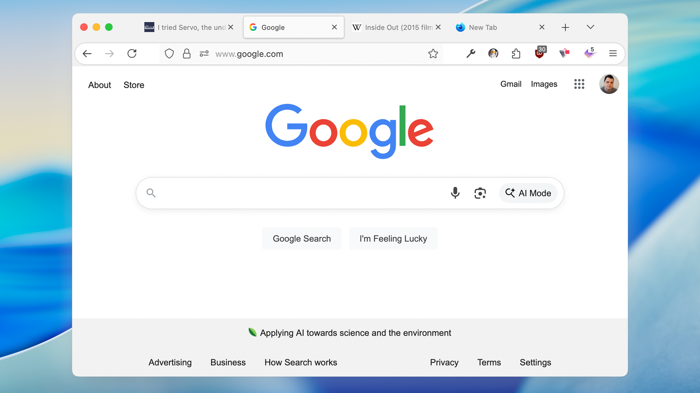
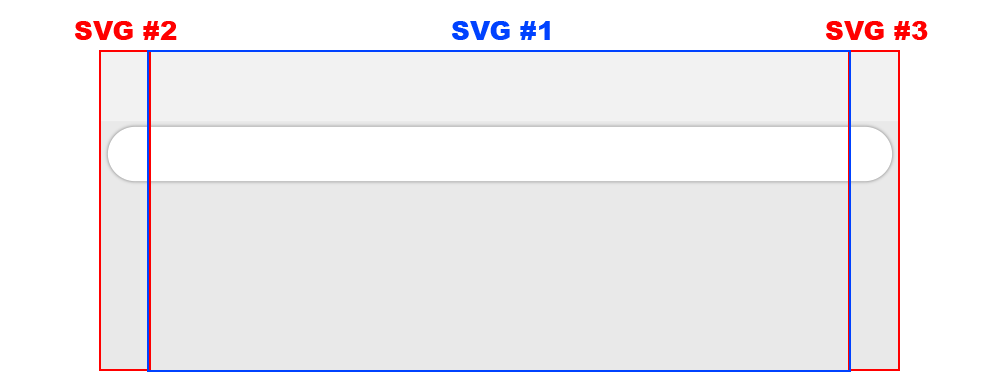
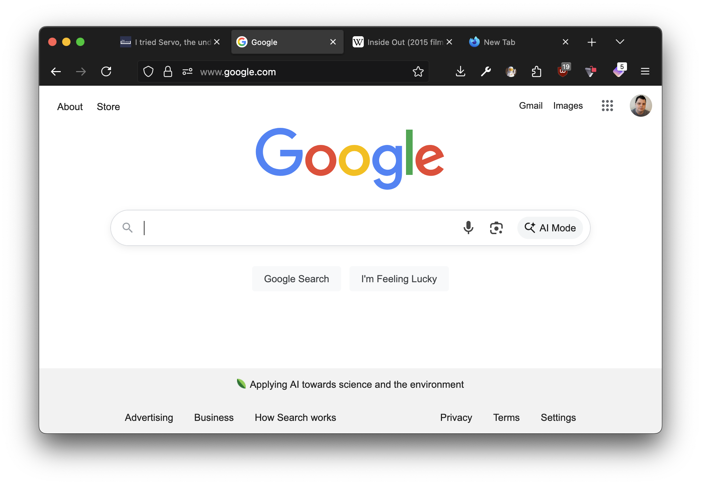
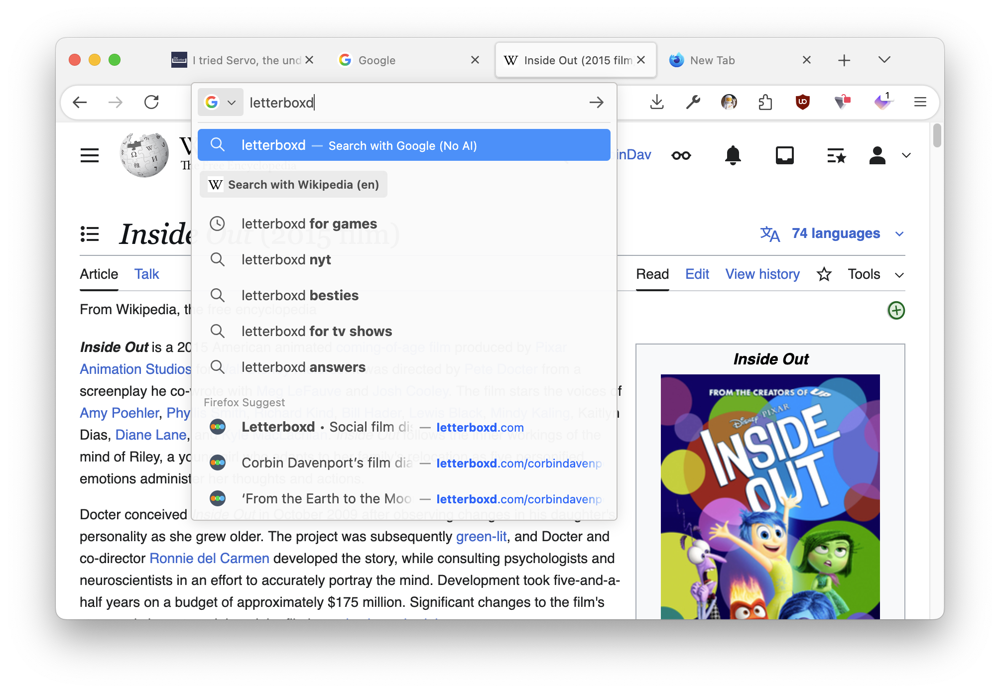

Back in 2024, I released a Firefox theme that more closely matched the color and design of the macOS operating system, called Cupertino. Apple is about to release macOS Tahoe 26 with a significant redesign, so I went back to the metaphorical drawing board to help Firefox fit in again. The new Cupertino theme is now available, and it was a lot more work than it looks!
The original theme was somewhat simple: I just used a color picker on macOS apps like Finder and Safari, and set those colors across the theme variables that Firefox supports. The incoming Liquid Glass redesign of macOS 26 posed two problems: Firefox cannot replicate the translucency effects that Apple is now using everywhere, and also Liquid Glass does not look good. So many interface elements across the operating system are difficult to read, complex to understand, or both.
The main feature here is the toolbar with rounded corners and a drop shadow, which sort of matches the new floating button groups in apps like Finder, System Settings, and Safari. This was achieved with Firefox’s support for additional backgrounds in themes: the left curve is one image, the right curve is another image, and the middle section is repeated across the remainder of the screen.

I was inspired by the old CSS trick for creating rounded boxes before it was a browser-level feature, which required a background image for each corner or side of the box. Sometimes, you can’t beat the classics. Each image in this theme is in SVG format, so it looks crisp on all monitor resolutions and display scaling settings.
The background colors also don’t exactly match macOS, because Firefox applies a light filter over the toolbar for themes using a background image—it’s more obvious in photo-based themes. This effect can’t be turned off, so I corrected the colors the best I could and updated the rest of the theme to match the modified color values. Unlike the white-on-white interface elements seen in the new Finder and other Liquid Glass applications with minimal contrast, the Firefox window frame is a light gray and the toolbar is solid white.
The Cupertino theme still supports dark mode, with colors based on Safari and Apple Music, but there’s no rounded toolbar. The light filter that Firefox applies over image backgrounds looks awful with darker backgrounds.

Firefox does allow some transparency in the search bar results, main overflow menu, and other elements, but without the fancy frosted glass-like translucency. I have this set to 97% opacity in the new Cupertino theme, because higher percentages make text more difficult to read—a problem in many applications using Liquid Glass proper.

The new theme strikes a decent balance between Apple’s updated design, features allowed by Firefox themes, and the visual contrast required for easy web browser usage. Hopefully, Firefox will eventually add native support for Liquid Glass-like effects, but I’m happy to use this in the meantime.
You can install the new Cupertino theme from Firefox Add-ons, and the source code is on GitHub. If you want to go back to the older theme for any reason, I’ve created a separate listing that is awaiting approval from Mozilla.